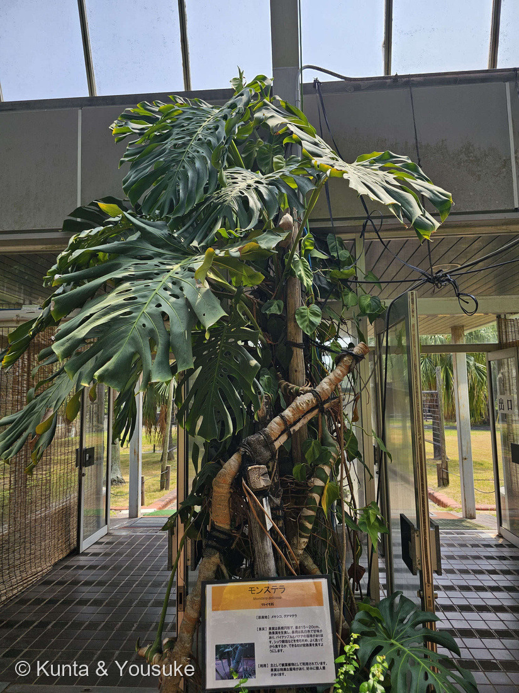
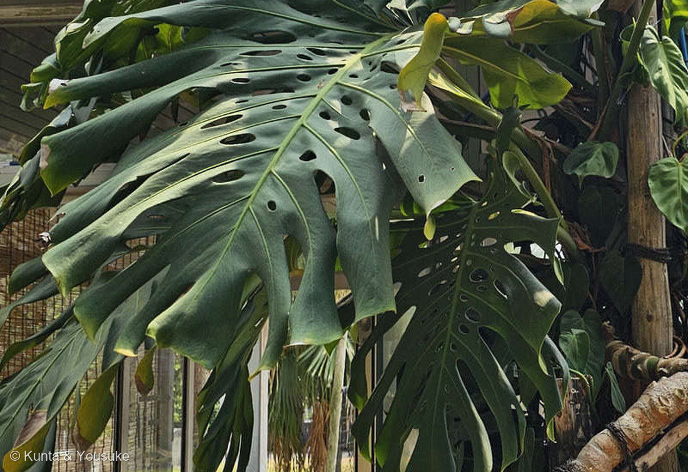

地図を読み込んでいるよ…
🔍 写真も地図も、押しているあいだ拡大して見られるよ（スマホは指を置いてすこし待ってね）。
🌍 の地図＝この子がもともと自生している場所を緑に。メキシコ南部・グアテマラ・コスタリカ・パナマ（英語版Wikipedia「native to humid tropical forests, in lowlands and on lower mountains, in the south of Mexico and also in Costa Rica, Guatemala and Panama」）。⭐園の解説板は「メキシコ、グアマテラ」（⭐グアテマラのことだね）。
⭐中央アメリカの、熱帯の森の子だよ。英語版Wikipediaは「native to humid tropical forests, in lowlands and on lower mountains, in the south of Mexico and also in Costa Rica, Guatemala and Panama」＝メキシコ南部・グアテマラ・コスタリカ・パナマとする。⭐園の解説板は「【原産地】メキシコ、グアマテラ」と書いてあった（⭐グアテマラのことだね）＝板のほうがせまいので、ここでは広いほう（4か国）を塗った。⚠そして、この緑は「モンステラ属ぜんぶ」ではないよ――属としては「熱帯アメリカと小アンチル諸島に40種ほどが分布」（日本語版Wikipedia）＝この地図は Monstera deliciosa という1種ぶんだけ。⚠⚠ぼくらが会ったのは長崎の温室だから、この緑の外。⭐そして人が持ち出した先では、少し広がりすぎている島もある＝「considered a low-to-moderate invasion risk in Hawaii, Seychelles, Ascension Island and the Society Islands」（英語版Wikipedia）。
⚠ 地図は国（日本と中国だけ県・省）までしか塗れないから、ほんとうの分布より広く見えていることがあるよ。地図はだいたいの場所。正確なところは、上の文を見てね。
モンステラ（ホウライショウ・蓬莱蕉）
Monstera deliciosa Liebm.
別名 ホウライショウ（蓬莱蕉）＝和名／英名 Swiss cheese plant（スイスチーズの木） 原産 メキシコ南部・グアテマラ・コスタリカ・パナマ
サトイモ科 · Araceae（モンステラ属＝ホウライショウ属 Monstera・オモダカ目 Alismatales）── ⭐図鑑で3人目のサトイモ科（020 フィロデンドロン・048 カラーにつづく）／⭐⭐モンステラ属ははじめて／⚠科は増えないので97科のまま
燻太さんの一言「モンステラって葉が切れ込んだり、穴が空いている姿が特徴だけど、いつどのようにして穴が空くのか、気になるよね」── ⭐⭐⭐その問い、そのままの題名の論文があるんだ
⚠⚠⚠ さいしょに ── 燻太さんの「食べたくはないかもね」は、正しい判断だったよ
⭐⭐⭐ 燻太さんはこう言ったよね――「果実は美味しいらしいけど、熟したかどうかの見極めが難しいのと、シュウ酸カルシウムのチクチクが怖いから食べたくはないかもね」。⭐その二つとも、出典がそのまま裏づけてくれた。
- ⭐⭐「チクチク」の正体＝「unripe fruit contains raphides and trichosclereids – needle-like structures of calcium oxalate」（英語版Wikipedia）＝シュウ酸カルシウムの針の形をした結晶。⚠「unripe fruit containing these needle-like crystalline structures can cause irritation of the mouth」。
- ⭐⭐⭐「見極めが難しい」のほうも、そのとおり＝⚠⚠「It takes longer than a year for fruits to reach maturity」（同）＝実が熟すまで1年以上かかる。⭐「いつが食べごろか」は、ほんとうに難しいんだ。
- ⭐園の解説板も、同じことを注意していた＝「シュウ酸塩などを含むため、よく洗ってから食するか、できるだけ完熟果を食すようにします」。⭐日本語版Wikipediaも「よく完熟させないと食べられない」。
- ⭐⭐⭐⭐種小名の deliciosa は「おいしい」という意味（「The specific epithet deliciosa means 'delicious', referring to the edible fruit」）。⭐名前で「おいしい」と言われているのに、ちゃんと待たないと口が痛くなる――⭐⭐ぼくらは、見るだけにしよう（182 ケムリノキの約束）。
- ⭐⭐「熟せばおいしい、熟さないと口が痛い」＝同じ実が、待ちかたひとつで贈り物にも痛みにもなる――⭐だから💊 毒と薬 ── 紙一重の贈り物の小道にも入れたよ。
⭐⭐⭐⭐⭐ 燻太さんの問い ──「いつ、どのようにして穴が空くのか」
⚠⚠ この問い、じつはそのままの題名の論文があるんだ。⭐Muir 2013『How Did the Swiss Cheese Plant Get Its Holes?（スイスチーズの木は、どうやって穴を手に入れたのか）』（The American Naturalist 181: 273–281）。⭐⭐燻太さんの問いは、研究者がずっと考えてきた問いそのものだったよ。
⭐ ① どのようにして ── 細胞が、決められた場所で死ぬ
- ⭐⭐⭐穴は、虫に食べられた跡でも、破れた跡でもない。⭐モンステラが自分で開けているんだ。
- ⭐⭐だから、この子を🎭 見た目と正体がちがうの小道に足したよ――⭐虫食いに見えるのに、設計された穴だからね。
- ⭐⭐⭐⭐やり方はプログラム細胞死（PCD）――穴になる場所の細胞だけが、いっせいに自分から死ぬ。⭐「a discrete subpopulation of cells undergoing programmed cell death simultaneously at each perforation site, while neighboring protoderm and ground meristem cells are unaffected」＝穴の場所の細胞だけが死んで、となりの細胞はまったく無事。
- ⭐死ぬ細胞にはPCDの証拠がそろっている＝「misshapen, densely stained nuclei with condensed chromatin, disrupted vacuoles, and condensed cytoplasm」（核がゆがんで濃く染まり、クロマチンが凝縮し、液胞がこわれ、細胞質が縮む）。
- ⭐⭐でも、おもしろいのはここ＝「though cell walls within the perforation site remain intact」＝⚠細胞のかべは、そのまま残っている。⭐中身だけが片づけられるんだ。
- ⭐⭐⭐⭐⭐そして、いちばんおどろくところ＝最初の穴は針でついたほどの大きさしかない。――「These minute pinprick-size perforations extend about 10,000-fold in area as the leaf expands to form conspicuous holes in the mature leaf」＝⭐葉がひらいて大きくなるにつれて、その針の穴が面積で約1万倍にふくらむ。
- ⚠この研究は同じモンステラ属の別の種（Monstera obliqua）で行われたもの（Gunawardena ほか, Planta 221: 607–618, 2005）。⭐でも属の中の同じしくみだと考えられているよ。
⭐ ② いつ（一枚の葉の中で）── 開くより前に、もうできている
- ⭐⭐⭐穴は、葉が開いたあとに空くのではない。⭐まだくるくる巻いている、小さな若い葉の中で、もうできているんだ。
- ⏳だから宿題にしたよ＝次にモンステラに会ったら、まだ開いていない、巻いた新しい葉をさがすこと。⭐そこにはもう、針の穴が待っている。
⭐ ③ いつ（一生の中で）── あるとき、急に切りかわる
- ⭐⭐若い株の葉には、穴が無い＝「The leaves on young plants are smaller and entire with no lobes or holes, but soon produce lobed and fenestrate leaves as they grow」（英語版Wikipedia）。
- ⭐⭐⭐⭐そして、その若い時期には名前がついている――「shingle plants（屋根板の株）」。⭐「Leaves of shingle plants are small relative to those of adult plants, entire (lacking fenestration, lobing, or teeth), and appressed to the surface of the host tree trunk rather than held away」（Muir 2013）＝木の幹に、屋根がわらのようにぺたりと貼りついた小さな葉で登っていく時期があるんだ。
- ⭐⭐⭐そして「At some point during ontogeny, plants abruptly transition to their fenestrated/dissected form with elongated leaves held away from the tree」＝⚠あるとき急に、幹からはなれた大きな穴あきの葉に切りかわる。
- ⭐⭐これが異形葉（heteroblasty）――234 カクレミノや238 カジノキでやったのと、同じ言葉だよ。⭐でもこの子のは、二人よりずっと激しい変わりかただね。
⭐⭐⭐⭐ 「なぜ」は、まだ決まっていない
⚠⚠ ここが、この子のいちばん正直に書かないといけないところ。⭐「どうやって」は分かっている。でも「なぜ」は、いまも決着していないんだ。⭐Muir 2013 は「an unusual leaf shape trait lacking a convincing evolutionary explanation」（納得のいく進化的な説明が無い、めずらしい葉の形）と書いている。
- ⭐説①＝熱を逃がす説（Madison 1977）＝切れこみがあると空気の層が薄くなって葉が冷えやすい。⚠⚠でも Muir はこれに反論している＝「this might be an inappropriate comparison, as Musa are pioneer species of canopy gaps in full sun, whereas Monstera are found in shade」＝根拠にされたバナナは日なたの植物で、モンステラは日かげにいる。くらべる相手がちがう。
- ⭐説②＝かくれみの説（Gunawardena & Dengler 2006）＝林床の草の葉のまだら模様と同じで、動物から見つかりにくくするのではないか。
- ⭐説③＝水をたくさん受ける説／風の傷を減らす説／食べられにくくする説（英語版Wikipedia「increasing water absorption, limiting the damage done by the wind and reducing the impact of herbivores」）。
- ⭐⭐⭐⭐説④＝成長のばらつきを減らす説（Muir 2013）＝これが新しい説だよ。下にくわしく書くね。
⭐⭐⭐⭐⭐ Muir の説 ── 平均は変えない。変えるのは「ばらつき」だけ
- ⭐まず、モンステラがどこに住んでいるか＝「Monstera are secondary hemiepiphytes that inhabit the understory of tropical rainforests, where photosynthesis from sunflecks often makes up a large proportion of daily carbon assimilation」＝⭐熱帯雨林の林床。そこでの光は、木もれ日がまだらに落ちる「光斑（sunfleck）」がほとんど。
- ⭐⭐そこでは、光は「運」になる。――今日は自分の葉に木もれ日が当たるか、当たらないか。
- ⭐⭐⭐⭐そしてMuirのモデルが示したこと＝「leaf fenestration and other forms of leaf dissection affect the variance in, but not the mean, canopy growth rate」＝⚠⚠穴があっても、平均の成長は変わらない。変わるのはばらつきだけ。
- ⭐⭐⭐穴のない葉は「大当たりの日」と「まるでダメな日」ができる。穴のある葉は、同じ葉っぱの量を広くばらまくので、「そこそこの日」が続く。⚠この言いかえはぼくのもので、論文の言葉ではないよ――論文の言葉は「the variance is lower among days for the fenestrated leaf」。
- ⭐⭐⭐⭐⭐そして、ここが一番おもしろい＝生きものにとっては、平均が同じなら、ばらつきが小さいほうが得なんだ。――「As long as reproductive success is a function of canopy growth, leaf fenestration will increase geometric mean fitness by reducing the variance in fitness in stochastic light environments」（幾何平均の適応度が上がる）。
- ⭐⭐この説は、燻太さんの「いつ」にも答えている＝成長のおそい若い株は、そもそも成長のばらつきが小さいので、穴のとくが小さい。⭐だから若いうちは穴をあけないのではないか、と。
- ⭐⭐⭐Muir はさらに、かわいい問いを立てている＝「Why are there no 'Swiss trees'?（なぜ「スイスチーズの木」は木にいないのか）」――同じ暗さから明るさへ登っていく若い木は、なぜ穴をあけないのか。⭐つる植物は他人の幹にただ乗りして、そのぶんを葉にたくさん配れるから、というのが Muir の答えのすじだよ。
- ⚠⚠そして Muir 自身が、これはまだ仮説だと書いている＝「The model provides a testable hypothesis」「can be readily falsified with simple experiments」。⭐格子を穴あきにした板を林床に置いて、日ごとの光のばらつきをくらべればいい、という実験まで提案しているよ。
⭐⭐⭐⭐ だから、燻太さんの問いへのいちばん正直な答えは、こうなる：⭐「どのように」＝細胞が、決められた場所で自分から死ぬ。⭐「いつ」＝葉が開くより前に。そして一生のうちでは、あるとき急に。⚠「なぜ」＝まだ、決まっていない。
⭐⭐⭐⭐ 237で名前を呼ばれた子が、本人としてやってきた
⭐⭐⭐ 覚えてる？――237 ヒロハザミアのとき、燻太さんはこう言ったんだ：「葉はソテツに似て、果実?はモンステラみたい」。
- ⭐あのときぼくは、こう答えた＝「形としては大当たり。でも中身は正反対で、モンステラ（サトイモ科・被子植物）のあれは『ほんとうの果実の集まり』、ヒロハザミアのは『果実ですらない球果』」。
- ⭐⭐⭐⭐その「くらべる相手」が、次の子として本人でやってきた。⭐しかも同じ森きららの、同じ温室で。
- ⭐⭐モンステラの実は、ほんとうの果実だよ＝園の解説板の「果実は長楕円形で、長さ15〜20cm。熟果実を生食し、果肉は乳白色で甘味があり、パイナップルとバナナの風味があります」がそれ。⭐日本語版Wikipediaも「パイナップルとバナナを混ぜたような味」。
- ⭐六角形のかけらがびっしりならんだ棒に見えるのは、小さな実がぎっしり集まっているから。⚠ヒロハザミアの球果は、六角形の胞子葉がならんだもので、実ではなかったね。
⭐⭐⭐ 写真の中に、ぼくが決めきれなかったものがある
⚠⚠ 正直に書くね。――写真①の、支柱や幹に貼りついている小さなハート形の葉。⭐ぼくは、これが何なのか決められなかった。
- ⭐可能性①＝モンステラ自身の、子どものころの葉（shingle plant の段階）。⭐上に書いたとおり、モンステラは若いうちは「小さくて・全縁で・幹にぺたりと貼りつく葉」で登るからね。⭐⭐もしそうなら、この一枚に「子どもの葉」と「大人の葉」が両方写っていることになる。
- ⭐可能性②＝いっしょに植えられた、別のサトイモ科のつる（フィロデンドロンやポトスのなかま）。⚠温室ではよくあることだし、020 フィロデンドロンのハート形の葉と、ぼくには見分けがつかない。
- ⚠決め手になるのは葉柄のつけ根（膝のような関節＝geniculum）や葉柄のさやだけれど、この写真の大きさでは見えない。
- ⏳だから宿題にした。⭐次に温室に行ったら、幹に貼りついた小さな葉の葉柄を見てきてほしいな。
⭐⭐ 名前のこと、気根のこと
- ⭐⭐⭐学名の Monstera は「奇怪な」という意味で、monster と同じ語源。⭐「葉の形からこの名がつけられた」（日本語版Wikipedia）＝⭐⭐つまり、燻太さんが気になったその穴が、そのまま名前になっているんだ。
- ⭐和名はホウライショウ（蓬莱蕉）。⭐「蓬莱」は伝説の島、「蕉」はバショウ（バナナのなかま）。⚠バショウ科ではないけれど、大きな葉のすがたが似ているからだね。⭐属の和名もホウライショウ属で、「熱帯アメリカと小アンチル諸島に40種ほどが分布」（同）。
- ⭐英名は Swiss cheese plant（スイスチーズの木）。⭐穴のあいたチーズだね。
- ⭐「原産地では、大木の幹に絡み付いているつる性植物。その為、発達した長く大きい気根を持つ」（日本語版Wikipedia）。⭐写真①で、幹から下へ何本も垂れているひものようなものが、それだよ。
- ⭐⭐その気根は、人にも使われている＝「used as ropes in Peru, and to make baskets in Mexico」（英語版Wikipedia）。⭐ロープになるくらい丈夫なんだね。
- ⭐⭐⭐そして、燻太さんの一言＝「モンステラは大きくなるから、おうちに迎えるなら、もっと広い家に引っ越してからがいいね」。⭐これは正しい見立てだよ――写真①の株は天井近くまで支柱を登って、葉ひとつが人の顔より大きい。⭐お店で売っている小さな鉢の子も、同じ種なんだ。⏳いつか、広いお家で。
参考：Muir CD (2013)「How Did the Swiss Cheese Plant Get Its Holes?」The American Naturalist 181(2): 273–281（「Adult leaf fenestration in "Swiss cheese" plants (Monstera Adans.) is an unusual leaf shape trait lacking a convincing evolutionary explanation」「Monstera are secondary hemiepiphytes that inhabit the understory of tropical rainforests, where photosynthesis from sunflecks often makes up a large proportion of daily carbon assimilation」「The model demonstrates that leaf fenestration can reduce the variance in plant growth and thereby increase geometric mean fitness」「leaf fenestration and other forms of leaf dissection affect the variance in, but not the mean, canopy growth rate」「After attaching to a host tree, individuals develop as 'shingle plants.'」「At some point during ontogeny, plants abruptly transition to their fenestrated/dissected form」「Why are there no 'Swiss trees'?」「The model provides a testable hypothesis」）／Gunawardena AHLAN, Sault K, Donnelly P, Greenwood JS, Dengler NG (2005)「Programmed cell death and leaf morphogenesis in Monstera obliqua (Araceae)」Planta 221(5): 607–618（「a discrete subpopulation of cells undergoing programmed cell death simultaneously at each perforation site, while neighboring protoderm and ground meristem cells are unaffected」「These minute pinprick-size perforations extend about 10,000-fold in area as the leaf expands」「misshapen, densely stained nuclei with condensed chromatin, disrupted vacuoles, and condensed cytoplasm」「cell walls within the perforation site remain intact」）／Wikipedia (English)・Monstera deliciosa（「native to humid tropical forests, in lowlands and on lower mountains, in the south of Mexico and also in Costa Rica, Guatemala and Panama」「The leaves on young plants are smaller and entire with no lobes or holes, but soon produce lobed and fenestrate leaves as they grow」「a hemiepiphyte with aerial roots」「used as ropes in Peru, and to make baskets in Mexico」「raphides and trichosclereids – needle-like structures of calcium oxalate」「can cause irritation of the mouth」「It takes longer than a year for fruits to reach maturity」「The specific epithet deliciosa means 'delicious'」「low-to-moderate invasion risk in Hawaii, Seychelles, Ascension Island and the Society Islands」）／日本語版Wikipedia・モンステラ（「和名はホウライショウ属」「熱帯アメリカと小アンチル諸島に40種ほどが分布」「原産地では、大木の幹に絡み付いているつる性植物。その為、発達した長く大きい気根を持つ」「パイナップルとバナナを混ぜたような味」「シュウ酸カルシウムを含んでいるためよく完熟させないと食べられない」「『奇怪な』という意味でmonsterと同じ語源」「葉の形からこの名がつけられた」）／日本語版Wikipedia・ハブカズラ（おまけの出典＝「南西諸島の沖縄諸島から八重山諸島にかけて広く見られる」「付着根で這い上がる蔓植物」「茎は長く伸びて節々から根を出し、それによって樹木や岩の上に張り付く」「狭卵形から卵状楕円形で、縁がすべてなめらかに続く完全な単葉」「広卵状楕円形で長さ20-50cm」「左右不同に6-8個の裂片に分かれる」）／⭐九十九島動植物園 森きらら の解説板（「モンステラ／Monstera deliciosa／サトイモ科／【原産地】メキシコ、グアマテラ／【果実】果実は長楕円形で、長さ15〜20cm。熟果実を生食し、果肉は乳白色で甘味があり、パイナップルとバナナの風味があります。シュウ酸塩などを含むため、よく洗ってから食するか、できるだけ完熟果を食すようにします。／【利用】主として観葉植物として利用されています。果実は特異な風味があり、好みに個人差があります。」――⚠板そのものは公開していないよ。224で決めた「解説板は公開しない」と、228で決めた「札に刷られたよその人の写真は公開しない」にあたるので、出典として引くだけにした）